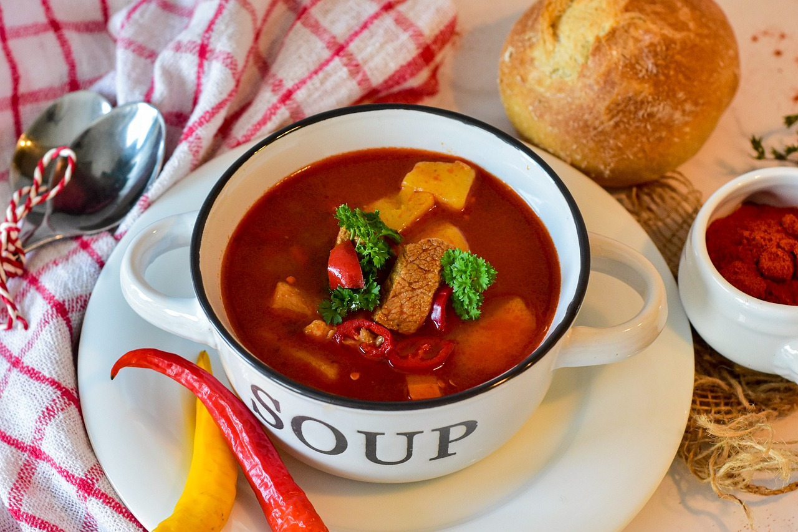

Bauerntopf

15 Min.
normal
22.12.2022
282 kcal
Zutaten für
| 130 | g | Rinderhackfleisch |
| 100 | g | Karotten |
| 1 | Paprika | |
| 1 | Zwiebel | |
| 30 | g | Tomatenmark |
| 200 | ml | Gemüsebrühe |
| 1 | EL | Crème fraîche |
| Salz & Pfeffer |
Nährwerte für 1 Portion
Protein: 2,7 g
Kohlenhydrate: 11 g
Fett: 3,7 g
Zubereitung
ca. 15 Min
Fertig in ca. 70 Min
Brate das Hackfleisch in einm großen Topf an. Schäle die Karotten und schneide sie in Scheiben.
Nun gebe alles in den Topf und vermische die Zutaten gut.
Mit der Brühe wird alles abgelöscht und danach aufgekocht.
Der Bauerntopf sollte 40 Minuten bei geringer Hitze köcheln.
Unsere Empfehlung ist die Zubereitung im Slow-Cooker bei niedigster Stufe
für 6 Stunden.
Guten Appetit!
Rezept erstellt von
Carmen